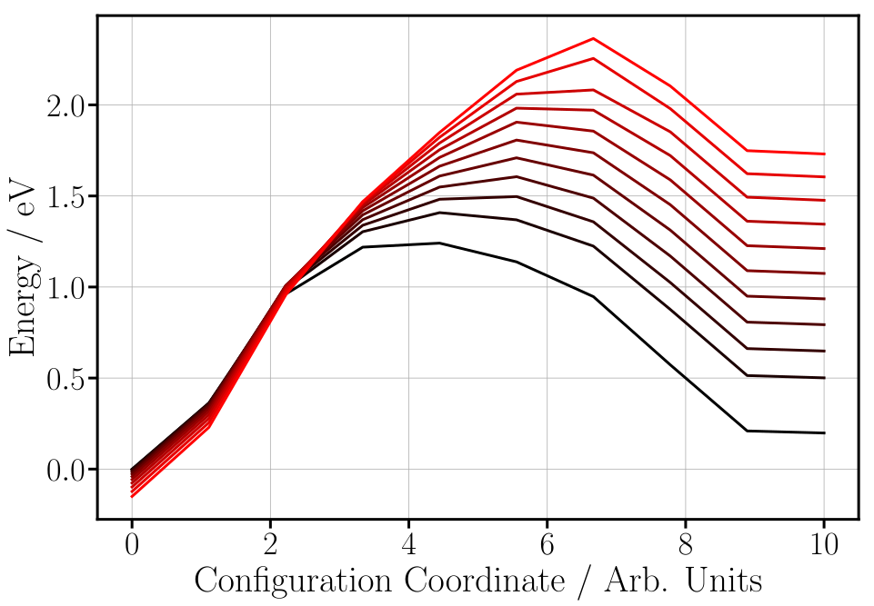
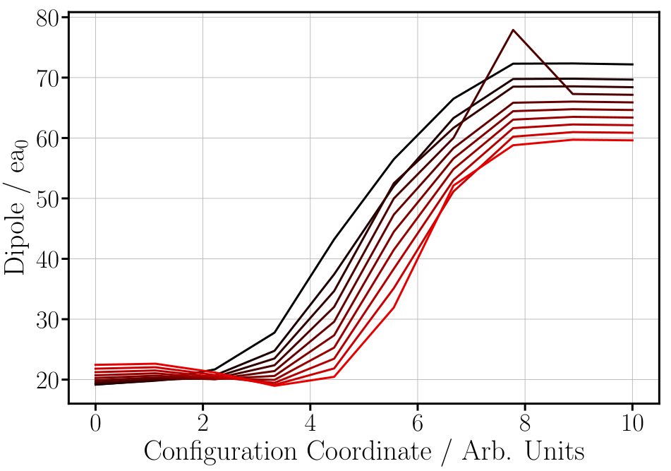

Effect of Field on Vacancy Electron Transfer
- PBE0 optimization of $\alpha$-quartz - Introduce two vacancies with charge 0 and -2 <img class="plain" src="figs/aquartz_dvacancy_dnegative_dos.svg">
### Applying Fields of up to +/- 10 MV cm$^{-1}$ does not cause spontaneous electron transfer
### Calculate barrier using NEB: 1.2 eV

 Applying field of +10 MV cm$^{-1}$ increases barrier by 1 eV
 Dipole moment change suggests similar barrier change for negative field